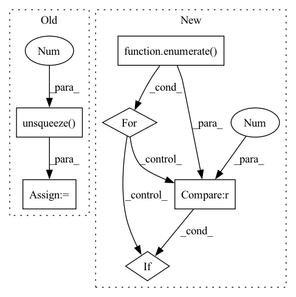

Pattern ID :36206

Before Change
// Computing False Acceptance Rate (false alarm)
negative_scores = torch.cat(
len(thresholds) * [negative_scores.unsqueeze(0)]
)
neg_scores_threshold = negative_scores.transpose(0, 1) > thresholds
FAR = (neg_scores_threshold.sum(0)).float() / negative_scores.shape[1]
del negative_scores
del neg_scores_threshold
// Finding the threshold for EER
min_index = (FAR - FRR).abs().argmin()
// It is possible that eer != fpr != fnr. We return (FAR + FRR) / 2 as EER.
EER = (FAR[min_index] + FRR[min_index]) / 2
return float(EER), float(thresholds[min_index])
After Change
final_FRR = 0
final_FAR = 0
for i, cur_thresh in enumerate(thresholds):
pos_scores_threshold = positive_scores <= cur_thresh
FRR = (pos_scores_threshold.sum(0)).float() / positive_scores.shape[0]
del pos_scores_threshold
neg_scores_threshold = negative_scores > cur_thresh
FAR = (neg_scores_threshold.sum(0)).float() / negative_scores.shape[0]
del neg_scores_threshold
// Finding the threshold for EER
if (FAR - FRR).abs().item() < abs(final_FAR - final_FRR) or i == 0:
min_index = i
final_FRR = FRR.item()
final_FAR = FAR.item()
In pattern: SUPERPATTERN
Frequency: 3
Non-data size: 6
Instances
Fragment ID: 102637018
Project Name: speechbrain/speechbrain
Commit Name: 84bca108f8c3739bc2f058bab7e43db32c46e090
Time: 2022-07-01
Author: dominik.wagner@th-nuernberg.de
File Name: speechbrain/utils/metric_stats.py
M Class Name: AnonimousClass
N Class Name: AnonimousClass
M Method Name: EER(2)
N Method Name: EER(2)
M Parent Class:
N Parent Class:
M File Name: speechbrain/utils/metric_stats.py
N File Name: speechbrain/utils/metric_stats.py
M Start Line: 477
M End Line: 505
N Start Line: 477
N End Line: 504
'>
Before Change
del pos_scores_threshold
// Computing False Acceptance Rate (false alarm)
negative_scores = torch.cat(
len(thresholds) * [negative_scores.unsqueeze(0)]
)
neg_scores_threshold = negative_scores.transpose(0, 1) > thresholds
FAR = (neg_scores_threshold.sum(0)).float() / negative_scores.shape[1]
After Change
final_FRR = 0
final_FAR = 0
for i, cur_thresh in enumerate(thresholds):
pos_scores_threshold = positive_scores <= cur_thresh
FRR = (pos_scores_threshold.sum(0)).float() / positive_scores.shape[0]
del pos_scores_threshold
neg_scores_threshold = negative_scores > cur_thresh
FAR = (neg_scores_threshold.sum(0)).float() / negative_scores.shape[0]
del neg_scores_threshold
// Finding the threshold for EER
if (FAR - FRR).abs().item() < abs(final_FAR - final_FRR) or i == 0:
min_index = i
final_FRR = FRR.item()
final_FAR = FAR.item()
'>
Fragment ID: 102637019
Project Name: speechbrain/speechbrain
Commit Name: f1fd2091d053c0c34e88b134495f9b791037b3dd
Time: 2022-06-23
Author: tplink312@gmail.com
File Name: speechbrain/utils/metric_stats.py
M Class Name: AnonimousClass
N Class Name: AnonimousClass
M Method Name: EER(2)
N Method Name: EER(2)
M Parent Class:
N Parent Class:
M File Name: speechbrain/utils/metric_stats.py
N File Name: speechbrain/utils/metric_stats.py
M Start Line: 477
M End Line: 505
N Start Line: 477
N End Line: 504
'>
Before Change
utterance_embedding=utterance_embedding,
lang_ids=lang_ids)
text_nonpadding_mask = make_non_pad_mask(text_lens, device=text_lens.device).unsqueeze(1)
if self.multispeaker_model:
utterance_embedding_expanded = utterance_embedding.unsqueeze(-1)
else:
After Change
predicted_durations = self.duration_predictor(encoded_texts.transpose(1, 2), text_masks, w=None, g=utterance_embedding_expanded, reverse=True)
predicted_durations = torch.ceil(torch.exp(predicted_durations)).long()
for phoneme_index, phoneme_vector in enumerate(text_tensors.squeeze()):
if phoneme_vector[get_feature_to_index_lookup()["word-boundary"]] == 1:
predicted_durations[0][0][phoneme_index] = 0
upsampled_enriched_encoded_texts = self.length_regulator(encoded_texts, predicted_durations.squeeze(0), alpha)
'>
Fragment ID: 102637017
Project Name: digitalphonetics/ims-toucan
Commit Name: f1b7c67dd27cface5f347ee2add6ef2e61d4cdbe
Time: 2023-03-05
Author: lux.florian@gmail.com
File Name: TrainingInterfaces/Text_to_Spectrogram/ToucanTTS/ToucanTTS.py
M Class Name: ToucanTTS
N Class Name: ToucanTTS
M Method Name: _forward(13)
N Method Name: _forward(13)
M Parent Class: torch.nn.Module,ABC
N Parent Class: torch.nn.Module,ABC
M File Name: TrainingInterfaces/Text_to_Spectrogram/ToucanTTS/ToucanTTS.py
N File Name: TrainingInterfaces/Text_to_Spectrogram/ToucanTTS/ToucanTTS.py
M Start Line: 285
M End Line: 371
N Start Line: 278
N End Line: 373